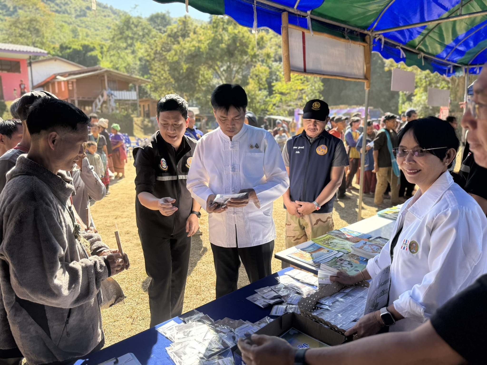
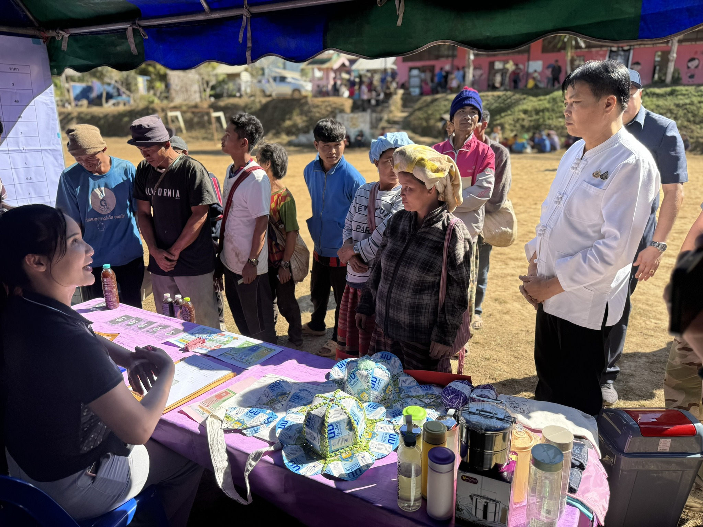

ที่ทำการปกครองอำเภอสบเมย
จังหวัดแม่ฮ่องสอน
จังหวัดแม่ฮ่องสอน

อำเภอสบเมย นำโดยนายอำเภอสบเมย พร้อมด้วยหัวหน้าส่วนราชการระดับอำเภอ ปลัดอำเภอ เจ้าหน้าที่ปกครอง ผู้นำท้องที่ และหน่วยงานที่เกี่ยวข้อง ลงพื้นที่จัดกิจกรรมตามโครงการ "ศูนย์ดำรงธรรมอำเภอ...ยิ้ม" (อำเภอเคลื่อนที่) ประจำเดือน [ใส่เดือนตรงนี้] ณ [ใส่สถานที่จัดงานตรงนี้ เช่น ศาลาประชาคมหมู่บ้าน...]
การจัดกิจกรรมในครั้งนี้ มีวัตถุประสงค์เพื่อนำงานบริการของรัฐออกไปให้บริการแก่ประชาชนในพื้นที่ห่างไกล เพื่อเป็นการลดภาระค่าใช้จ่ายในการเดินทางของประชาชนในการเข้ามาติดต่อราชการที่ตัวอำเภอ โดยมีการออกบูธให้บริการจากหลากหลายหน่วยงาน เช่น งานบริการทำบัตรประจำตัวประชาชนเคลื่อนที่ (Mobile Unit) การรับปรึกษาปัญหาข้อกฎหมาย การรับเรื่องราวร้องทุกข์ของศูนย์ดำรงธรรมอำเภอ การให้ความรู้ด้านการเกษตร สาธารณสุข และการมอบถุงยังชีพให้แก่ผู้ยากไร้และผู้สูงอายุในพื้นที่
ทั้งนี้ นายอำเภอสบเมย ได้พบปะพูดคุยเพื่อรับฟังปัญหาความเดือดร้อนและความต้องการของพี่น้องประชาชนในพื้นที่โดยตรง เพื่อนำไปบูรณาการแก้ไขปัญหาร่วมกับองค์กรปกครองส่วนท้องถิ่นและหน่วยงานที่เกี่ยวข้องต่อไป ซึ่งกิจกรรมดังกล่าวได้รับความสนใจและมีประชาชนมาร่วมรับบริการเป็นจำนวนมาก
